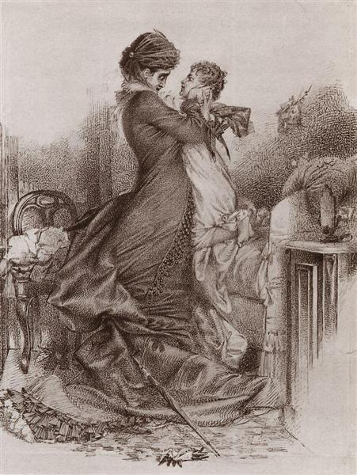
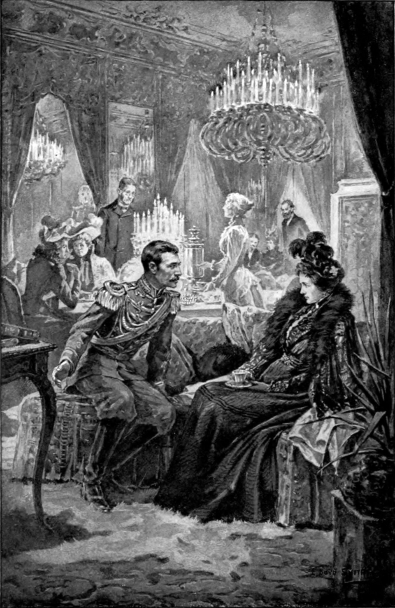

Crossing Thresholds

In Anna Karenina, a key motif is that of crossing thresholds, which entails the crossing of physical boundaries by characters and results in significant changes in their lives. The motif first appears through concrete physical actions such as entering a house or crossing a border. These moments place characters in situations where one state has ended but another has not yet fully formed. After establishing these physical crossings, the novel extends the idea of the threshold to moral, emotional, and existential change, which carries a deeper meaning.
In Part 1, Chapter 21, when Vronsky arrives at the Oblonsky home, he remains outside the inner space, “standing by the lamp," as a servant goes upstairs to announce him (Tolstoy 78). At this stage, the domestic interior still functions as a boundary he does not cross, marking an early limit to his movement within social and private spaces. Kitty sees Vronsky’s visit as normal and assumes he came to see her, while Anna finds it strange and somewhat inappropriate, suggesting that even before he crosses any physical threshold, his presence already disrupts expected social boundaries.
Part 4 is particularly rich in its use of thresholds. In Chapter 2, Vronsky goes to visit Anna and unexpectedly encounters Karenin outside, not knowing he was still in the house. The encounter is marked by tension and suppressed emotion as both maintain a controlled exterior. Karenin continues on his way, allowing Vronsky to cross the threshold and enter his house to visit Anna. However, this crossing has immediate consequences. It is after this encounter that Karenin confronts Anna and begins to consider using her letters with Vronsky as evidence in a divorce process intended to publicly disgrace her and prevent any future remarriage.
Vronsky is one of the characters who most frequently crosses physical boundaries throughout the novel, and his movements increasingly transgress established social and domestic limits. His entries into the Karenin household follow a clear progression. After entering without direct confrontation, he later appears during Anna’s illness without permission and remains only through Karenin’s explicit allowance. One of the most significant moments occurs when he reenters the house in Chapter 23 of the same part, after his suicide attempt and Karenin’s forgiveness and agreement to a divorce. The house, which represents marriage, order, and legitimacy, becomes the space where those boundaries are repeatedly crossed. Vronsky speaks with Anna and insists, “It will all pass, it will all pass; we shall be so happy!” (Tolstoy 437). By crossing into Anna’s private space, particularly her bedroom during and after her illness, he moves beyond a social boundary into a more intimate threshold. This crossing effectively cancels the spiritual reconciliation that had taken place between him and Karenin, turning what appeared to be a moment of moral restoration into the beginning of a new and irreversible stage. At the end of the chapter, Anna and Vronsky leave Russia for Italy, crossing a geographic boundary that reflects the continuation of their relationship and their movement beyond the social structure that had previously constrained them.
Another important crossing appears when Anna returns to Karenin’s house in secret in order to see her son Seryozha after months of no contact with him. She enters Karenin’s house as she did many times before but now in a fundamentally different way. The same place that once did not function as a threshold for her now becomes a boundary she can no longer cross in the same way, as she is no longer present as a “proper wife.” The act of entering is marked by tension and concealment, and instead of restoring her place, it emphasizes the fact that she does not belong there anymore. The meaning of the threshold has changed in this case, even though the space itself has not.
The motif of crossing thresholds also appears in scenes of birth, illness, and death, which are not only symbolic turning points but are also structured through carefully defined interior spaces. These events take place in enclosed rooms where access is controlled, with characters moving in and out at crucial moments, marking transitions between life, death, and social roles. Moments such as the birth of Mitya, the death of Nikolay Levin, and Anna’s own illness all reinforce this pattern. A similar dynamic appears in the horse race, where Vronsky physically crosses barriers with Frou-Frou, reflecting his repeated transgression of limits in both physical and social terms. A related example appears earlier in the novel when Anna and Vronsky consummate their relationship, and Anna is described as “standing at this threshold into a new life" (Tolstoy 152). A similar pattern appears in Madame Bovary, where Emma’s movement into new social spaces, such as the aristocratic ball or her secret meetings, functions as a form of threshold crossing that promises transformation but ultimately deepens her dissatisfaction.
Taken together, these moments show that Tolstoy builds the motif of crossing thresholds through specific physical actions that gradually take on broader meaning. What begins as movement through space becomes a way of understanding how relationships, identities, and lives change in ways that cannot be undone. Each crossing marks a point from which characters cannot return to their previous state, emphasizing the irreversible nature of their choices and the lasting consequences that follow.

Works Cited
- Flaubert, Gustave. Madame Bovary. Penguin Classics, 2002.
- Tolstoy, Leo. Anna Karenina. Translated by Richard Bartlett, Oxford University Press, 2014.